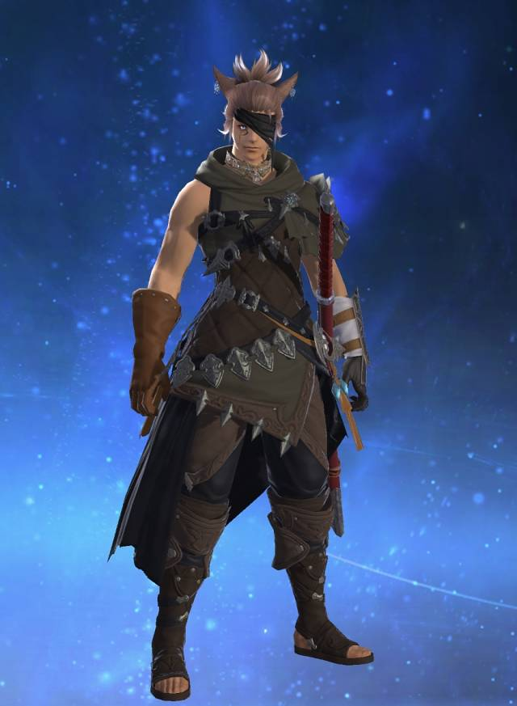

Wrench är en av medlammarna i Dead-sec gruupen där Marcus (huvudpersonen) är med i. Han är med på denna lista eftersom att han är en rolig och bra skriven karaktär. Plus att jag älskar hans karaktärsdesgin.Dunban är en soldat och en hjälte med ett sant hjärta. Han är alltid villig att lägga sitt eget liv på linjen för att rädda alla andra. Han är lätt en av de mest mogna medlemmarna i Shulks team, om inte den mest mogna, och påminner ofta de andra om att inte bli för kaxiga eller slarviga och hålla fokus.Yosuke är en klumpig utbytesstudent som anlände sex månader före huvudpersonen. Han är ofta målet för skämt om hans brist på muskler och kroppsstyrka, och slåss med knivar. Protagonisten möter honom för förstagången när man ser honom krascha sin cykel i en soptunna.Wulfric är en sällsynt blade i Xenoblade Chronicles 2. Han kan ge enorm drivkraft till sina Drivers, Rex, Nia, Zeke eller Mòrag och deras allierade. Wulfric använder jordelementet, Använder en megalans och fungerar som en angripare i strid. Han är stor och kraftfull och har utseendet en demon. Han har två långa böjda horn, spikar som fodrar armarna och benen och en spikig svans. På varje axel har han en slags avloppskanal som släpper ut ånga efter att ha utfört vissa Specials. Trots sitt utseende är han en otroligt vänlig och tycker om att hjälpa andra.
Ryuji är känt som en störande "problemstudent" i skolan vars dåliga beteende orsakar allvarliga problem för lärarna. Hans upproriska, illaluktande och olydiga natur är de perfekta egenskaperna att vara en Phantom Thief. Han är lite korthärdad och blir arg från även de minsta kommentarerna från andra och kan ibland till och med ta till våld. På motsatt sätt kan Ryuji säga elak kommentare utan att tänka på konsekvenserna,
Sans är avslappnad, sover ofta på jobbet och tar raster. Hans lathet är en kombination av fatalism och apati. Han undrar om hans slöhet stammar från hans kunskap om att eventuella framsteg som han gör kommer att raderas när tidslinjen återställs. Omvänt föreslår han att denna kunskap kan vara "en dålig ursäkt för att vara lat."

Min karaktär i online-spelet Final Fantasy XIV. Han är bara med eftersom att han är bästPyra är hjältinan i Xenoblade Chronicles 2. Hon är en speciell legendarisk blade som ger enorm eld-elemental kraft till hennes driver, Rex. Som en blad är hon odödlig och har förmågan att snabbt återhämta sig från skador. Det ända sätt dö är om Kärnkristallen på hennes bröst förstörs, eller när Rex dör. Pyra och Rex börjar på en resa för att leta efter Elysium, och Rex är ägnad åt att skydda henne
Mythra och Pyra är de två personifieringarna av Aegis, den legendariska bladet bär en smaragdkärnad kristallkärna, från vilken Pyra kan omvandlas till Mytra och vice versa. Hon söks av flera personer som Bana, ordföranden för Argentum Trade Guild, eller Torna-organisationen. Det sägs att ansträngningarna att hitta Aegis kommer att sänka världen till kaos. Rex ägnas åt att skydda henne, eftersom Pyra gav Rex hälften av hennes livskraft för att få honom tillbaka från de döda.Nathan "Nate" Drake är huvudkaraktären i Uncharted-serien. En före detta professionell skattejägare, Nate, beskrivs som en "djup havs berednings expert och action-pro". Sedan barndomen har Nate och hans äldre bror Sam trot att dom härstammar från den berömda engelska exploreren Sir Francis Drake.